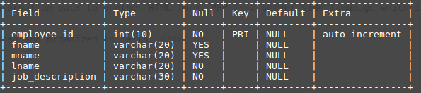
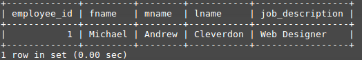

Full means that you develop both the front end, and the back end. The front end is what the user sees on what is called the client computer. The back end is what is on the server computer that delivers content to the front end.
Stack means that several programs, a "stack" of programs, are used. HTML 5, CSS, and JS are used in the front end stack. Linux, Apache, MySql and PHP are used in the back end stack.
LAMP stands for Linux, Apache, MySQL and PHP. These are all used for server/database creation. This means that information can be secured in a seperate database in a completely seperate place in the world. Linux is the basis for server operation Apache is the web server itself MySQL is the database that we use PHP is the database programming language
What is a database?
A database is a massive storage tool that can be used to organize and sort data into groups/columns. Many businesses use these to help manage the sheer amount of data that they use on a day to day basis.
What is MySQL?
MySQL is a tool used to create databases. It is the second most popular database creation tool in the world, second only to Oracle.
What is SQL
S = Structured, meaning the data can be easily found Q = Query, asking a question to a database, data retrieval L = Language, This is a programming language. MySQL is the name of the database, while SQL is the language that is used inside the database to answer question
What is PHP?
PHP is the bridge between front and back end. PHP reads HTML forms then sends the form info to the server. PHP also reads the database, then sends that information back to another HTML form. PHP is a server side language which is totally secure and private.
MySQL table: Has rows and columns, where data is stored and organized in cells.
8. mysql> CREATE TABLE table_name ( -> employee_id int(10) PRIMARY KEY NOT NULL AUTO_INCREMENT, -> fname varchar(20), -> mname varchar(20), -> lname varchar(20) NOT NULL, -> job_description varchar(30) NOT NULL, -> );
9. INSERT INTO 'table_name' (fname, mname, lname, job_description)
-> VALUES('Taylor', 'A', 'Swift', 'Musician');
